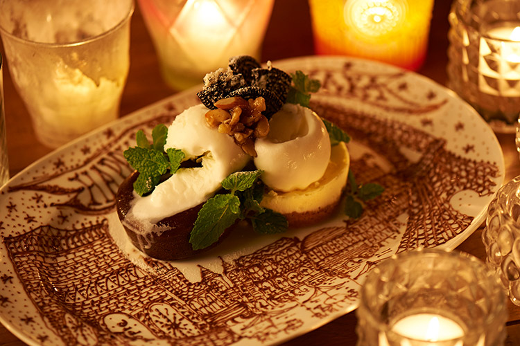
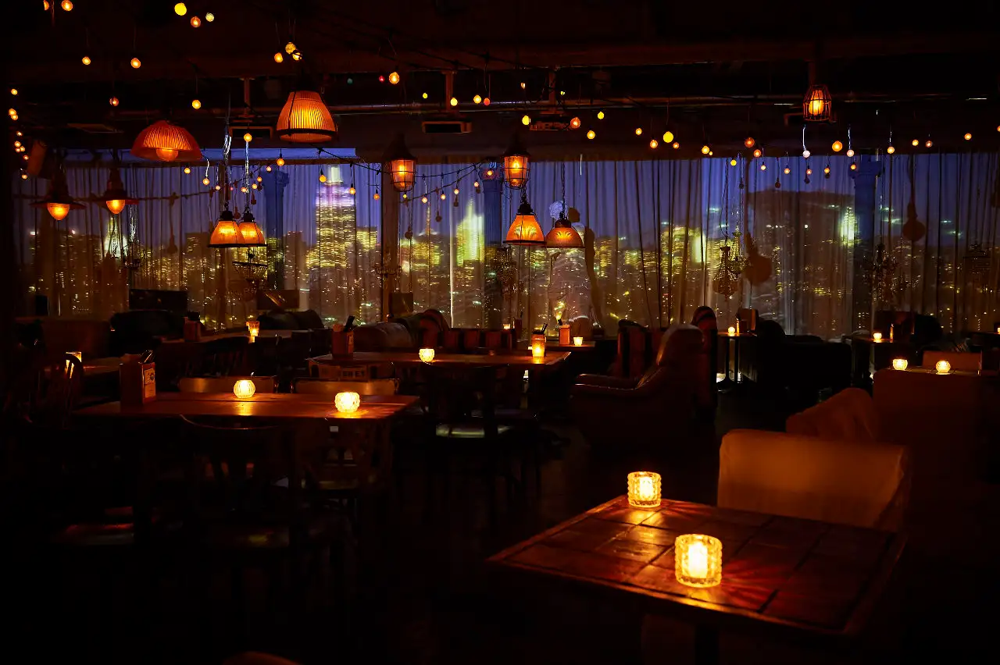
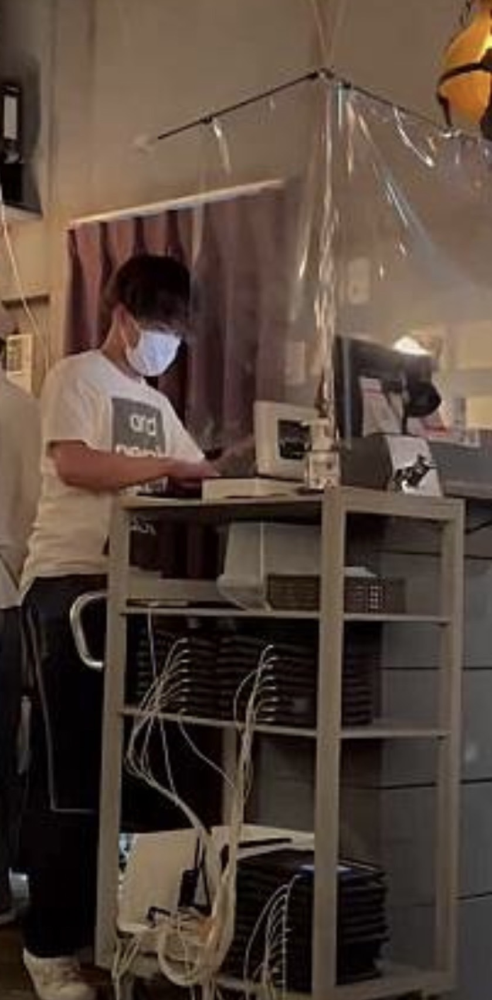

Life
自分とは真逆の渋谷のおしゃれなカフェで の勤務に挑戦しながら、多くの人に笑顔を 提供している。また個人の日常生活ではラ ンニング、温泉を趣味としていてWEB政策 にもチャレンジしている。
part-time job
イタリアンカフェホール業務
ホールリーダー
渋谷の昼カフェと居酒屋ホール業務を１年半おこなって います。業務内容としてはサプライズプレート提供による お祝いの準備や日々の飲食店業務です。その中で最年少 のホールリーダーとして意思を積極的に伝え、チームが 適切に動けるように尽力しています。


